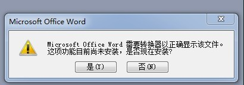

word不能打开求教(2000金)
#1 word不能打开求教(2000金) 作者：失落刀 发表时间：2011-12-1 8:02:48

打开朋友发来的一个WORD文档过程中，出现该图？该如何解决？
点了“是”没有用。
麻烦详细告诉解决方法，谢谢。
［此帖子已被 失落刀 在 2011-12-3 22:15:58 编辑过］
#2 Re:word不能打开求教 作者：有志青年 发表时间：2011-12-1 8:23:04
他的版本比你的高？
你是office2003，他是2007的docx？
#3 Re:word不能打开求教(2000金) 作者：自来水 发表时间：2011-12-4 10:31:00
如果是DOCX文件，
1.这是网页临时转换器 http://www.doc.investintech.com/ （稍微懂点英文）
2.最好是去下一个合适兼容包 ，但需要时间
其他问题...比较繁杂